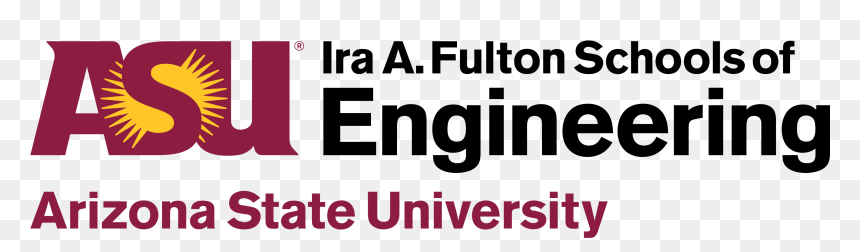

Professional Experience
Apple
Sept 2021–Present
User Researcher – Human Factors & Product Systems Quality June 2025–Nov 2025
Cupertino, CA
- Initialized and scaled user research for a major Apple Vision Pro initiative, designing and executing empirical studies to evaluate comfort, perceptual quality, and human-system interaction metrics at scale.
- Served as DRI (Directly Responsible Individual) for Apple's fastest large-scale validation study, establishing rigorous protocols to measure complex human dimensions and directly inform critical cross-functional build specifications.
- Analyzed quantitative datasets from 200+ participants, translating complex behavioral and biometric data into visual, executive-ready presentations to guide senior leadership on product launch readiness.
- Designed immersive 3D digital environments across 3 distinct platforms to optimize lab space configurations and testing workflows under compressed product ship cycles.
User Researcher – Apple Intelligence Siri (AIML) Jan 2024–June 2024
Cupertino, CA
- Designed and executed 5 major mixed-methods product evaluation frameworks supporting Apple Intelligence, operationalizing multi-modal and multi-turn conversational AI interactions into observable UX metrics.
- Directed end-to-end design of human annotation projects; authored detailed evaluation guidelines and successfully reconciled conflicts across complex multi-labeled datasets to train underlying AI models.
- Evaluated non-deterministic AI experiences by running 20+ rapid prototype simulations, establishing actionable evaluation criteria to help ML and engineering partners refine system responsiveness.
- Conducted and synthesized 700+ hours of qualitative and quantitative user research (including cognitive interviews and think-aloud protocols) to isolate qualitative patterns in model behaviors.
- Integrated eye-tracking (Tobii) and biometric data across 10+ usability frameworks, translating physical and cognitive workload indicators into concrete algorithmic and UX recommendations.
- Diagnosed conversational constraints (latency, response quality, search intent misalignment), translating technical audio and system limitations into user-centric UX recommendations that increased feature engagement.
Technical Specialist Sept 2021–Present
Scottsdale, AZ
- Applied user-centered problem solving to identify user pain points and improve system usability through real-time support and issue resolution.
- Performed troubleshooting and root-cause analysis across interconnected hardware, software, and service systems.
- Synthesized insights from direct user interactions to inform systems thinking, human factors analysis, and workflow improvements.
- Mentored team members on AI-enhanced support strategies, driving knowledge sharing and improving team operational efficiency.

Arizona State Human Computer Interaction Lab
Jan 2021–Dec 2021
Human Systems Engineer (Intern) – Human Machine Teaming Jan 2021–Dec 2021
Tempe, AZ
- Programmed synthetic virtual testbed environments in Lua to evaluate human cognitive workload and situational awareness during autonomous search and rescue operations for a high-priority DOD initiative.
- Iterated user-facing copy, tutorial instructions, and interactive UI frameworks within simulation environments, leveraging empirical behavioral data to improve operator training efficiency.
- Mentored 5+ junior engineers on spatial thinking, interactive environment development, and rapid environment scripting.
Education
Master of Science – User Experience (UX)
Arizona State University – Ira A. Fulton School of Engineering, Tempe, AZ
- Thesis Project: Led UX design investigations on perceptual systems, integrating universal design, accessibility, anthropometric analysis, and ergonomics for inclusive solutions.

Bachelor of Science (B.S.) Human Systems Engineering
Arizona State University – Ira A. Fulton School of Engineering, Polytechnic Campus
- Capstone Project: Led an end-to-end UX redesign for the Apple Health app, conducting user research to map user journeys and building interface solutions in Figma for formal panel review.
Certifications & Awards
Systems Engineering — Lockheed Martin Engineering Program
University of Colorado Boulder — Credential ID: 01FNTZNV5ELA
Google Professional AI Certificate
Credential ID: XXGOP400K2W9
IRB – Social and Behavioral Research Group 2
CITI Program — Credential ID: 40497225
80+ Private Pilot Hours
ATP Flight School + Private Pilot Instruction